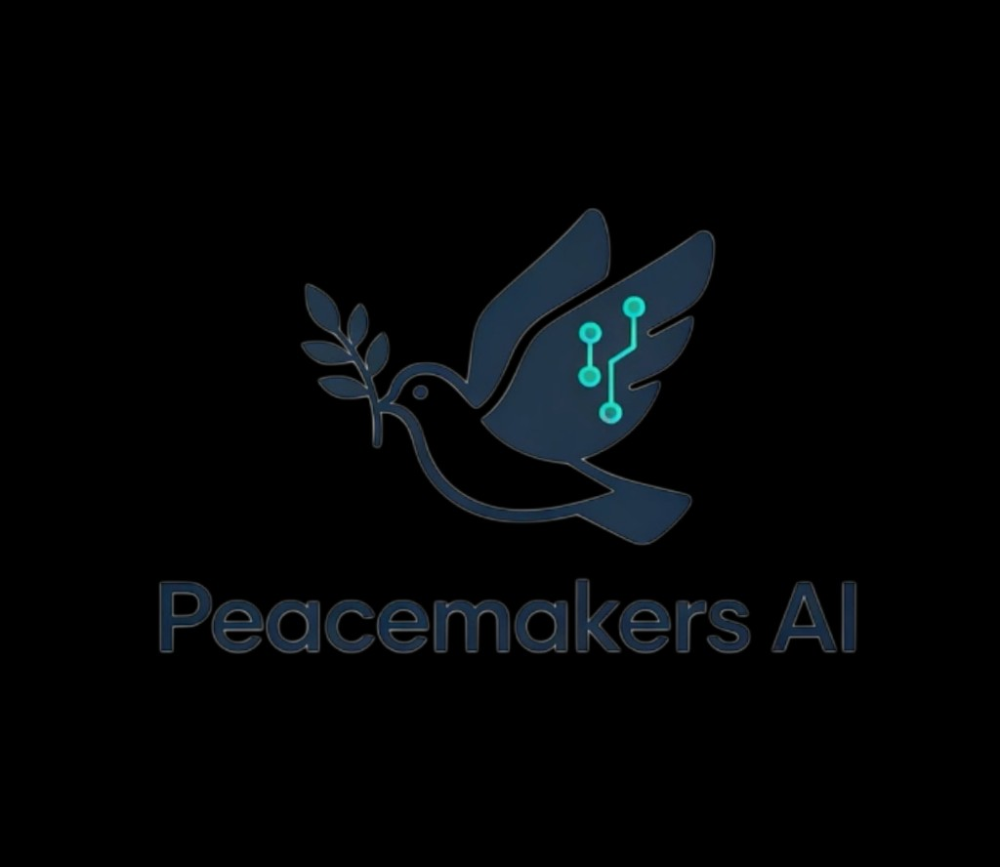

Peacemakers AIBusiness Blueprint
{{company_name}}
Prepared exclusively for {{company_name}}
Peacemakers AI Solutions
Evidence-backed priorities for improving workflow reliability, control, visibility, and responsible automation.
Confidential — for {{company_name}} internal use
Blueprint at a Glance
Read this page first. Sequence is a priority order — not a scored ranking and not a promised implementation calendar.
| Workflow / area | Core issue | Recommended first move | Sequence |
|---|---|---|---|
| {{glance_1_area}} | {{glance_1_issue}} | {{glance_1_move}} | {{glance_1_sequence}} |
| {{glance_2_area}} | {{glance_2_issue}} | {{glance_2_move}} | {{glance_2_sequence}} |
| {{glance_3_area}} | {{glance_3_issue}} | {{glance_3_move}} | {{glance_3_sequence}} |
| {{glance_4_area}} | {{glance_4_issue}} | {{glance_4_move}} | {{glance_4_sequence}} |
| {{glance_5_area}} | {{glance_5_issue}} | {{glance_5_move}} | {{glance_5_sequence}} |
Executive summary
{{desired_outcomes_summary}}
{{what_was_reviewed}}
Central conclusion. {{central_supported_conclusion}}
Recommended overall direction (Proposed): {{high_level_recommended_direction}}
What needs attention now
{{attention_now}}
What does not need to be purchased or automated yet
{{attention_not_yet}}
Engagement scope
- {{intake_reviewed}}
- {{evidence_reviewed}}
- {{blueprint_discussion}}
- {{priority_workflows_considered}}
{{important_limitations}}
Findings below are evidence-backed. Every recommendation remains Proposed until {{company_name}} leadership selects or approves it. This Blueprint does not include implementation design, a fixed implementation timeline, an implementation quote, or guaranteed savings/ROI.
Priority workflow findings
{{workflow_1_name}}
What we confirmed
{{workflow_1_confirmed}}
Where the process breaks down
{{workflow_1_breakdown}}
Why this matters
{{workflow_1_why_it_matters}}
What remains unresolved
{{workflow_1_unresolved}}
{{workflow_2_name}}
What we confirmed
{{workflow_2_confirmed}}
Where the process breaks down
{{workflow_2_breakdown}}
Why this matters
{{workflow_2_why_it_matters}}
What remains unresolved
{{workflow_2_unresolved}}
{{workflow_3_name}}
What we confirmed
{{workflow_3_confirmed}}
Where the process breaks down
{{workflow_3_breakdown}}
Why this matters
{{workflow_3_why_it_matters}}
What remains unresolved
{{workflow_3_unresolved}}
Root-cause themes
Supported causes grouped for leadership discussion. Prevalence beyond reviewed samples is often unknown. Do not treat grouping as statistical proof.
{{theme_1_name}}
{{theme_1_causes}}
{{theme_2_name}}
{{theme_2_causes}}
{{theme_3_name}}
{{theme_3_causes}}
{{theme_4_name}}
{{theme_4_causes}}
{{provisional_or_unresolved_cause_note}}
Controls to preserve
A step may appear manual and still be serving an important control function. Peacemakers recommends removing or automating that step only when the control can be preserved or improved.
- {{control_1}}
- {{control_2}}
- {{control_3}}
- {{control_4}}
- {{control_5}}
Recommended action plan
All items are Proposed. “Later / conditional” is not a promised implementation plan.
Foundational actions
- {{now_1}}
- {{now_2}}
- {{now_3}}
After definitions and process are stable
- {{next_1}}
- {{next_2}}
Requires more evidence or prerequisites
- {{later_1}}
- {{later_2}}
Do not pursue on current evidence
- {{not_justified_1}}
- {{not_justified_2}}
What we are not recommending — yet
{{not_recommending_intro}}
- {{not_rec_1}}
- {{not_rec_2}}
- {{not_rec_3}}
Priority / readiness map
No scores. This map shows sequence and readiness — not ROI and not a calendar.
Current technology position
{{systems_assessed}}
{{current_tools_first_conclusion}}
- Verified: {{verified_capabilities}}
- Still requiring authoritative verification: {{unverified_capabilities}}
- Replacement supported? {{replacement_supported}}
Subscription or plan names alone are not proof of feature, permission, reporting, workflow, integration, or API capability. Evaluate current software first for native functionality, configuration, integration, and deterministic automation. A future AI opportunity does not imply a new AI platform should be purchased.
Future AI & automation opportunities
Conditional on process, data, control, and technology readiness
Some AI or automation opportunities may become useful after the foundational process, data, ownership, and control issues identified in this Blueprint are addressed. These are not current implementation recommendations. They are future candidates worth re-evaluating once the stated prerequisites are met. Watchlist items do not automatically enter implementation scoping.
Deterministic automation is rule-based (reminders, routing, alerts, validation). AI-assisted work is probabilistic (summaries, classification, drafts) and still needs human review where consequential. Higher-autonomy AI taking consequential actions is not implied here.
{{future_none_or_intro}}
{{future_1_opportunity}}
- Business use case
- {{future_1_use_case}}
- Readiness prerequisites
- {{future_1_prerequisites}}
- Appropriate later intervention
- {{future_1_level}}
- Why not now
- {{future_1_why_not_now}}
- Re-evaluation trigger
- {{future_1_trigger}}
{{future_2_opportunity}}
- Business use case
- {{future_2_use_case}}
- Readiness prerequisites
- {{future_2_prerequisites}}
- Appropriate later intervention
- {{future_2_level}}
- Why not now
- {{future_2_why_not_now}}
- Re-evaluation trigger
- {{future_2_trigger}}
{{future_3_opportunity}}
- Business use case
- {{future_3_use_case}}
- Readiness prerequisites
- {{future_3_prerequisites}}
- Appropriate later intervention
- {{future_3_level}}
- Why not now
- {{future_3_why_not_now}}
- Re-evaluation trigger
- {{future_3_trigger}}
Measurement
Before higher-level automation is considered, the organization should establish a trustworthy baseline that separates true defects, normal timing, and exception handling.
Decision-useful measures once definitions exist (no invented baselines or targets):
| Measure | Purpose | Baseline status |
|---|---|---|
| {{measure_1}} | {{measure_1_purpose}} | {{measure_1_baseline_status}} |
| {{measure_2}} | {{measure_2_purpose}} | {{measure_2_baseline_status}} |
| {{measure_3}} | {{measure_3_purpose}} | {{measure_3_baseline_status}} |
| {{measure_4}} | {{measure_4_purpose}} | {{measure_4_baseline_status}} |
Leadership decisions required
These are the decisions a leadership meeting can actually take. All remain Proposed until approved.
{{decision_1_title}}
Why it matters. {{decision_1_why}}
Owner: {{decision_1_owner}} · Next: {{decision_1_next}}
{{decision_2_title}}
Why it matters. {{decision_2_why}}
Owner: {{decision_2_owner}} · Next: {{decision_2_next}}
{{decision_3_title}}
Why it matters. {{decision_3_why}}
Owner: {{decision_3_owner}} · Next: {{decision_3_next}}
{{decision_4_title}}
Why it matters. {{decision_4_why}}
Owner: {{decision_4_owner}} · Next: {{decision_4_next}}
{{decision_5_title}}
Why it matters. {{decision_5_why}}
Owner: {{decision_5_owner}} · Next: {{decision_5_next}}
Recommended next step
The paid Business Blueprint engagement is complete once {{company_name}} reviews these findings and Proposed recommendations.
{{company_name}} may:
- Implement recommendations internally
- Take no further action
- Ask Peacemakers to scope implementation of one or more selected current Proposed recommendations
If Peacemakers implementation is requested, that work is scoped and contracted separately after leadership selects Proposed items. Future AI/automation watchlist items do not automatically enter that scoping. This document does not include implementation pricing, a fixed timeline, technical configuration design, or detailed implementation planning.